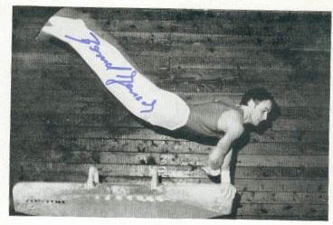

Bernd Jensch (GDR)
1983 World V Bronze Medalist

Medal Total
World Championships: 1 Bronze
Competition Results
1973
Jr. Friendship Tournament (Druzhba): 1st Team, 1st AA, 1st FX, 1st V, 6th PB,
7th PH, 7th HB
1975
Moncada Cup: 1st AA
1976
Chunichi Cup: 14th AA
GDR Championships: 2nd AA
GDR-ROM Dual Meet: 1st Team, 3rd AA
GDR-USSR Dual Meet: 2nd Team, 12th AA
Tokyo Cup: 3rd FX, 3rd V
1977
GDR Championships: 4th AA
GDR-CSSR Dual Meet: 1st Team, 3rd AA
GDR-ROM Dual Meet: 1st Team, 6th AA
GDR-SUI Dual Meet: 1st Team, 4th AA
GDR-USSR Dual Meet: 2nd Team, 8th AA
Golden Sands International: 4th AA
1978
GDR-USSR Dual Meet: 2nd Team, 7th AA
International Championships of Romania: 9th AA, 3rd V, 5th R, 5th PB, 8th FX, 8th HB
1979
Blume Memorial: 3rd AA
GDR Championships: 3rd FX, 4th R, 6th V, 7th PH
1981
Champions All: 4th AA
GDR-ROM Dual Meet: 1st Team, 1st AA
World Championships: 4th Team, 30th AA (prelims)
1982
American Cup: 13th AA (prelims)
Champions All: 2nd AA
GDR Championships: 4th AA
Intl. Mixed Pairs: 11th Team
SKDA Championships: 1st Team, 1st AA, 2nd PB, 3rd FX, 3rd R, 3rd V, 8th HB
1983
FRA-GDR Dual Meet: 1st Team, 7th AA
GDR Championships: 4th AA
GDR-NOR Dual Meet: 1st Team, 1st AA
World Championships: 5th Team, 30th AA (prelims), 3rd V
1984
GDR Championships: 1st V, 3rd PB, 4th R, 7th FX
GDR-USSR Dual Meet: 1st Team, 8th AA
Moncada Cup: 5th AA
This page was created on June 25,
2005 and was last updated on August 23, 2013.
© Gymn Forum